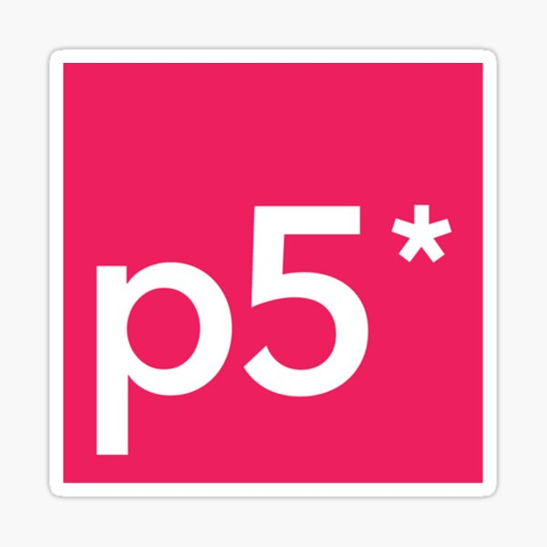

This Project is built on the C++ Geometry Central Library written by Nick Sharp. Using Interop services I have developed a method to expose most of the functions in this library to the Grasshopper environment. This includes generating Cross,Line and Vector Fields on 3D Triangular meshes as well as multiple tools for manipulating these fields. The plugin also allows for measuring multiple different curvature values on Triangle meshes. Finally It also adds multiple components for geodesics on triangular meshes including geodesic distances, geodesic curves, geodesic bezier curves. All these features allow for new data driven design methods as a the ability to develop hair models in the grasshopper environment.
Through this project I implemented the Heat Method as it was proposed by Keenan Crane at Carnegie Mellon University. This is a method of finding geodesic distances on any triangular manifold based on simulating how heat would distribute over the surface. This project was written in a combination of C++ and C# coding languages. The Grasshopper plugin has three components; the first simulates the heat distribution over the triangular mesh supplied. The second extracts IsoCurves based on the distances from the first component. Finally the third component splits the mesh into strips based on the distance value supplied . Once split the component reorganises the triangles in each strip to ensure a smooth edge.
This project takes a realistic simulation of fluid interactions and then uses data from the simulation to alter an input model of a sole unit for a shoe. The project was written in Java and OpenGL. The implementation of the Navier Stokes equation runs on the GPU which allows for simulation and interaction to run in real time. The interaction with the software focuses on mainly using the mouse as a paint brush. When you interact with the simulation you change the velocity of the water and can add in colors which will dissipate through the liquid in the same way food dye dissipates in water. The model of the sole shoe is flattened automatically and the naked edges of this flattened mesh are used for the outer boundary of the fluid simulation, you can also define your own walls allowing for certain areas of the shoe to be designed separately from other parts. Finally there are two main ways within which you can visualize the simulation. The first is by visualizing the color interactions. The second is through visualising the flow lines which are isocurves extracted from the velocity of the field. These two visualisations can be used to manipulate the final mesh.
Differential Line Growth Jewelery Tool
Languages:
This project is a 3D development of the previous differential line growth project. In order to optimize the algorithm I introduced Octrees to dramatically improve the speed of the growth. Using the octrees meant that the number of calculations dropped by an order of magnitude. Secondly in order to extract 3D triangular meshes from the simulation I implemented the Marching cubes algorithm and used an Octree to insure that the mesh did not contain any duplicate points. Using this tool you can select different styles of jewelry and in real time watch the curve grow over the surface. You are also invited to adjust variables in real time; the impact of these changes can then be seen as the curve continues to grow.
Scaled Customiser Tool
Languages:
This project was developed for Scaled Ltd to give them a customizer tool for their website. The project starts off with an easy to use wizard which allows the user to define all the parameters for their required product. After the wizard is complete the tool transitions to giving a 3D view of the product they have designed. The tool relies on WEBGL to instantiate meshes and simulate textures and lighting in the scene. Whilst in this view the user can still alter parameters to update the design before saving the design which gives them a CSV file containing all the parameters which Scaled can use to drive their grasshopper to produce the final geometry ready for 3D printing.
2D Differential Art Software
Languages: 
This was a free peice of software I wrote in JavaScript based on differential Line growth. This line growth is very simular to the growth methods found in corals which was my inspiration for the project. The software allows for selection of different set shapes or a custom drawn curves which then grow as a simulation. The growth can be adjusted in real time using parameters allowing you to vary the vissual effect over time.
Fermat Spiral Space Filling
Languages:
This project is based on the paper "Connected Fermat spirals for layered Fabrication". The paper outlines the algorithm for creating paths for 3D printers. However the nature of the algorithm seems ideal for fibre based designs. These Designs were created through C# code which runs within the Grasshopper environment. The fundamental part of the algorithm is that the path will start and end at the same point, it achieves this by initially spiralling inwards until it reaches the center and then spirals back out. The algorithm can deal with multiple spirals and will ensure that there are no places where the path crosses itself. I applied this algorithm to the upper of a shoe to illustrate the idea of being able to make an upper from one piece of string with no waste .
Leaf venation
Languages:
This project was based on the paper 'Modeling and visualization of leaf venation patterns' which outlines a method to accurately simulate the growth of leaf veins through a space colonization algorithm. I chose to implement this in grasshopper and then produce 3D geometry through either mapping the geometry to 3D meshes and then using the volumetric modelling plugin Dendro to create 3D printable object. Through this project I produced a 3D printed bracelet in nylon and also designed a table in which the simulation starts from each of the legs independantly.
Proximity Drawing Software
Languages:
The proximity design software was developed as a piece of free art software based on the simple idea of connecting points within a given proximity. As the user moves the mouse points are laid down as each point is added the software uses a quad tree to check if there are any other points in its vicinity, any points close enough will be connected with a line. The result is a form of smooth line art which grows in real time